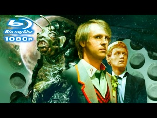
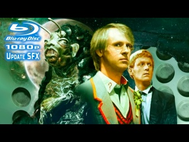
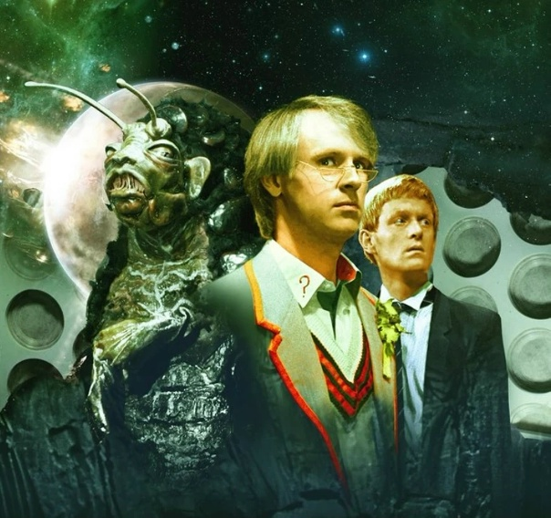
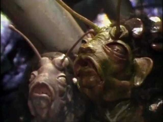

DVO [PARUSSKI] или Original [ENG] Субтитры: Русские и Английские |  |
|---|---|
с обновленными спецэффектами DVO [PARUSSKI] или Original [ENG] Субтитры: Русские и Английские |  |
Frontios
Дата выхода: 26 января - 3 февраля 1984
Формат: 4 эпизода по 25 мин.
| |
ТАРДИС прибывает на планету Фронтиос в далёком будущем — там остатки человечества борются за существование под метеоритными бомбардировками, а земля буквально поглощает людей. Когда ТАРДИС будто бы уничтожена, Доктор отрезан от помощи Повелителей Времени. Под поверхностью скрываются трактаторы — гигантские насекомые, управляющие гравитацией, и их предводитель Гравис собирается превратить Фронтиос в космический корабль.
Сценарист Кристофер Бидмид ненавидел монстров и считал, что в сериале они всегда выглядят дёшево — но продюсер настоял на серии с чудовищами. Трактаторы вдохновлены мокрицами, которые одно время терроризировали дом Бидмида. А когда ТАРДИС «уничтожили» в первом эпизоде, таблоиды разнесли слух, что сериал продолжится без неё.
 VHS - март 1997 | DVD - 30 мая 2011 | Blu-ray - 16 марта 2026 * Версия в нашей группе |
|---|

